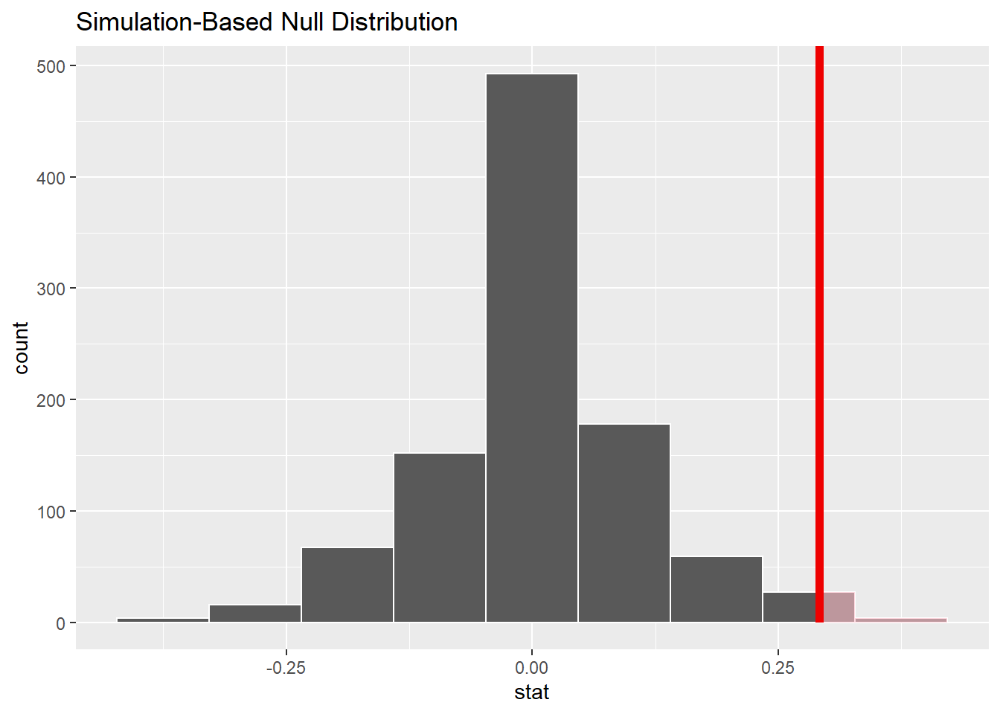

Chapter 9 Introduction to randomization, Part 2
2.0
Functions introduced in this chapter
sample, specify, hypothesize, generate, calculate, visualize, shade_p_value, get_p_value
9.1 Introduction
In this chapter, we’ll learn more about randomization and simulation. Instead of flipping coins, though, we’ll randomly shuffle data around in order to explore the effects of randomizing a predictor variable.
9.1.1 Install new packages
If you are using RStudio Workbench, you do not need to install any packages. (Any packages you need should already be installed by the server administrators.)
If you are using R and RStudio on your own machine instead of accessing RStudio Workbench through a browser, you’ll need to type the following commands at the Console:
install.packages("openintro")
install.packages("infer")9.1.2 Download the R notebook file
Check the upper-right corner in RStudio to make sure you’re in your intro_stats project. Then click on the following link to download this chapter as an R notebook file (.Rmd).
https://vectorposse.github.io/intro_stats/chapter_downloads/09-intro_to_randomization_2.Rmd
Once the file is downloaded, move it to your project folder in RStudio and open it there.
9.2 Load packages
We’ll load tidyverse as usual along with the janitor package to make tables (with tabyl). The openintro package has a data set called sex_discrimination that we will explore. Finally, the infer package will provide tools that we will use in nearly every chapter for the remainder of the book.
library(tidyverse)
library(janitor)
library(openintro)## Loading required package: airports## Loading required package: cherryblossom## Loading required package: usdata##
## Attaching package: 'openintro'## The following object is masked from 'package:mosaic':
##
## dotPlot## The following objects are masked from 'package:lattice':
##
## ethanol, lsegments## The following object is masked from 'package:faraway':
##
## oringslibrary(infer)##
## Attaching package: 'infer'## The following objects are masked from 'package:mosaic':
##
## prop_test, t_test9.3 Our research question
An interesting study was conducted in the 1970s that investigated gender discrimination in hiring.13 The researchers brought in 48 male bank supervisors and asked them to evaluate personnel files. Based on their review, they were to determine if the person was qualified for promotion to branch manager. The trick is that all the files were identical, but half listed the candidate as male and half listed the candidate as female. The files were randomly assigned to the 48 supervisors.
The research question is whether the files supposedly belonging to males were recommended for promotion more than the files supposedly belonging to females.
Exercise 1
Is the study described above an observational study or an experiment? How do you know?
Please write up your answer here.
Exercise 2(a)
Identify the sample in the study. In other words, how many people were in the sample and what are the important characteristics common to those people.
Please write up your answer here.
9.4 Exploratory data analysis
Here is the data:
sex_discrimination## # A tibble: 48 × 2
## sex decision
## <fct> <fct>
## 1 male promoted
## 2 male promoted
## 3 male promoted
## 4 male promoted
## 5 male promoted
## 6 male promoted
## 7 male promoted
## 8 male promoted
## 9 male promoted
## 10 male promoted
## # ℹ 38 more rowsglimpse(sex_discrimination)## Rows: 48
## Columns: 2
## $ sex <fct> male, male, male, male, male, male, male, male, male, male, m…
## $ decision <fct> promoted, promoted, promoted, promoted, promoted, promoted, p…Exercise 3
Which variable is the response variable and which variable is the predictor variable?
Please write up your answer here.
Here is a contingency table with decision as the row variable and sex as the column variable. (Recall that we always list the response variable first. That way, the column sums will show us how many are in each of the predictor groups.)
tabyl(sex_discrimination, decision, sex) %>%
adorn_totals()## decision male female
## promoted 21 14
## not promoted 3 10
## Total 24 24Exercise 4
Create another contingency table of decision and sex, this time with percentages (not proportions) instead of counts. You’ll probably have to go back to the “Categorical data” to review the syntax. (Hint: you should have three separate adorn functions on the lines following the tabyl command.)
# Add code here to create a contingency table of percentagesAlthough we can read off the percentages in the contingency table, we need to do computations using the proportions. (Remember that we use percentages to communicate with other human beings, but we do math with proportions.) Fortunately, the output of tabyl is a tibble! So we can manipulate and grab the elements we need.
Let’s create and store the tabyl output with proportions. We don’t need the marginal distribution, so we can dispense with adorn_totals.
decision_sex_tabyl <- tabyl(sex_discrimination, decision, sex) %>%
adorn_percentages("col")
decision_sex_tabyl## decision male female
## promoted 0.875 0.5833333
## not promoted 0.125 0.4166667Exercise 5
Interpret these proportions in the context of the data. In other words, what do these proportions say about the male files that were recommended for promotion versus the female files recommended for promotion?
Please write up your answer here.
The real statistic of interest to us is the difference between these proportions. We can use the mutate command from dplyr variable compute the difference for us.
decision_sex_tabyl %>%
mutate(diff = male - female)## decision male female diff
## promoted 0.875 0.5833333 0.2916667
## not promoted 0.125 0.4166667 -0.2916667As a matter of fact, once we know the difference in promotion rates, we don’t really need the individual proportions anymore. The transmute verb is a version of mutate that gives us exactly what we want. It will create a new column just like mutate, but then it keeps only that new column. We’ll call the resulting output decision_sex_diff.
decision_sex_diff <- decision_sex_tabyl %>%
transmute(diff = male - female)
decision_sex_diff## diff
## 0.2916667
## -0.2916667Notice the order of subtraction: we’re doing the men’s rates minus the women’s rates.
This computes both the difference in promotion rates (in the first row) and the difference in not-promoted rates (in the second row). Let’s just keep the first row, since we care more about promotion rates. (That’s our success category.) We can use slice to grab the first row:
decision_sex_diff %>%
slice(1)## diff
## 0.2916667This means that there is a 29% difference between the male files that were promoted and the female files that were promoted. The difference was computed as males minus females, so the fact that the number is positive means that male files were more likely to recommended for promotion.
9.5 Permuting
One way to see if there is evidence of an association between promotion decisions and sex is to assume, temporarily, that there is no association. If there were truly no association, then the difference between the promotion rates between the male files and female files should be 0%. Of course, the number of people promoted in the data was 35, an odd number, so the number of male files promoted and female files promoted cannot be the same. Therefore, the difference in proportions can’t be exactly 0 in this data. Nevertheless, we would expect—under the assumption of no association—the number of male files promoted to be close to the number of female files promoted, giving a difference around 0%.
Now, we saw a difference of about 29% between the two groups in the data. Then again, non-zero differences—sometimes even large ones— can just come about by pure chance alone. We may have accidentally sampled more bank managers who just happened to prefer the male candidates. This could happen for sexist reasons; it’s possible our sample of bank managers are, by chance, more sexist than bank managers in the general population during the 1970s. Or it might be for more benign reasons; perhaps the male applications got randomly steered to bank managers who were more likely to be impressed with any application, and therefore, they were more likely to promote anyone regardless of the gender listed. We have to consider the possibility that our observed difference seems large even though there may have been no association between promotion and sex in the general population.
So how do we test the range of values that could arise from just chance alone? In other words, how do we explore sampling variability?
One way to force the variables to be independent is to “permute”—in other words, shuffle—the values of sex in our data. If we ignore the sex listed in the file and give it a random label (independent of the actual sex listed in the file), we know for sure that such an assignment is random and not due to any actual evidence of sexism. In that case, promotion is equally likely to occur in both groups.
Let’s see how permuting works in R. To begin with, look at the actual values of sex in our data:
sex_discrimination$sex## [1] male male male male male male male male male male
## [11] male male male male male male male male male male
## [21] male male male male female female female female female female
## [31] female female female female female female female female female female
## [41] female female female female female female female female
## Levels: male femaleAll the males happen to be listed first, followed by all the females.
Now we permute all the values around (using the sample command). As explained in an earlier chapter, we will set the seed so that our results are reproducible.
set.seed(3141593)
sample(sex_discrimination$sex)## [1] male female male male female female female female female female
## [11] female female female female male male female male female male
## [21] female female male male female female male female male male
## [31] male male male female male female male male male male
## [41] female female female male male male female male
## Levels: male femaleDo it again without the seed, just to make sure it’s truly random:
sample(sex_discrimination$sex)## [1] male male male female male female male female female female
## [11] female male female male female female female female male male
## [21] female female female male male female male male male female
## [31] male male male male male female female female female male
## [41] female female male male male female female male
## Levels: male female9.6 Randomization
The idea here is to keep the promotion status the same for each file, but randomly permute the sex labels. There will still be the same number of male and female files, but now they will be randomly matched with promoted files and not promoted files. Since this new grouping into “males” and “females” is completely random and arbitrary, we expect the likelihood of promotion to be equal for both groups.
A more precise way of saying this is that the expected difference under the assumption of independent variables is 0%. If there were truly no association, then the percentage of people promoted would be independent of sex. However, sampling variability means that we are not likely to see an exact difference of 0%. (Also, as we mentioned earlier, the odd number of promotions means the difference will never be exactly 0% anyway in this data.) The real question, then, is how different could the difference be from 0% and still be reasonably possible due to random chance.
Let’s perform a few random simulations. We’ll walk through the steps one line at a time. The first thing we do is permute the sex column:
set.seed(3141593)
sex_discrimination %>%
mutate(sex = sample(sex))## # A tibble: 48 × 2
## sex decision
## <fct> <fct>
## 1 male promoted
## 2 female promoted
## 3 male promoted
## 4 male promoted
## 5 female promoted
## 6 female promoted
## 7 female promoted
## 8 female promoted
## 9 female promoted
## 10 female promoted
## # ℹ 38 more rowsThen we follow the steps from earlier, generating a contingency table with proportions. This is accomplished by simply adding two lines of code to the previous code:
set.seed(3141593)
sex_discrimination %>%
mutate(sex = sample(sex)) %>%
tabyl(decision, sex) %>%
adorn_percentages("col")## decision male female
## promoted 0.6666667 0.7916667
## not promoted 0.3333333 0.2083333Note that the proportions in this table are different from the ones in the real data.
Then we calculate the difference between the male and female columns by adding a line with transmute:
set.seed(3141593)
sex_discrimination %>%
mutate(sex = sample(sex)) %>%
tabyl(decision, sex) %>%
adorn_percentages("col") %>%
transmute(diff = male - female)## diff
## -0.125
## 0.125In this case, the first row happens to be negative, but that’s okay. This particular random shuffling had more females promoted than males. (Remember, though, that the permuted sex labels are now meaningless.)
Finally, we grab the entry in the first row with slice:
set.seed(3141593)
sex_discrimination %>%
mutate(sex = sample(sex)) %>%
tabyl(decision, sex) %>%
adorn_percentages("col") %>%
transmute(diff = male - female) %>%
slice(1)## diff
## -0.125We’ll repeat this code a few more times, but without the seed, to get new random observations.
sex_discrimination %>%
mutate(sex = sample(sex)) %>%
tabyl(decision, sex) %>%
adorn_percentages("col") %>%
transmute(diff = male - female) %>%
slice(1)## diff
## 0.04166667sex_discrimination %>%
mutate(sex = sample(sex)) %>%
tabyl(decision, sex) %>%
adorn_percentages("col") %>%
transmute(diff = male - female) %>%
slice(1)## diff
## 0.125sex_discrimination %>%
mutate(sex = sample(sex)) %>%
tabyl(decision, sex) %>%
adorn_percentages("col") %>%
transmute(diff = male - female) %>%
slice(1)## diff
## 0.125sex_discrimination %>%
mutate(sex = sample(sex)) %>%
tabyl(decision, sex) %>%
adorn_percentages("col") %>%
transmute(diff = male - female) %>%
slice(1)## diff
## -0.2916667Think carefully about what these random numbers mean. Each time we randomize, we get a simulated difference in the proportion of promotions between male files and female files. The sample part ensures that there is no actual relationship between promotion and sex among these randomized values. We expect each simulated difference to be close to zero, but we also expect deviations from zero due to randomness and chance.
9.7 The infer package
The above code examples show the nuts and bolts of permuting data around to break any association that might exist between two variables. However, to do a proper randomization, we need to repeat this process many, many times (just like how we flipped thousands of “coins” in the last chapter).
Here we introduce some code from the infer package that will help us automate this procedure. The added benefit of introducing infer now is that we will continue to use it in nearly every chapter of the book that follows.
Here is the code template, starting with setting the seed:
set.seed(3141593)
sims <- sex_discrimination %>%
specify(decision ~ sex, success = "promoted") %>%
hypothesize(null = "independence") %>%
generate(reps = 1000, type = "permute") %>%
calculate(stat = "diff in props", order = c("male", "female"))
sims## Response: decision (factor)
## Explanatory: sex (factor)
## Null Hypothesis: independence
## # A tibble: 1,000 × 2
## replicate stat
## <int> <dbl>
## 1 1 -0.125
## 2 2 -0.125
## 3 3 -0.0417
## 4 4 0.0417
## 5 5 0.125
## 6 6 -0.0417
## 7 7 -0.0417
## 8 8 0.125
## 9 9 0.125
## 10 10 0.208
## # ℹ 990 more rowsWe will learn more about all these lines of code in future chapters. By the end of the course, running this type of analysis will be second nature. For now, you can copy and paste the code chunk above and make minor changes as you need. Here are the three things you will need to look out for for doing this with different data sets in the future:
- The second line (after setting the seed) will be your new data set.
- In the
specifyline, you will have a different response variable, predictor variable, and success condition that will depend on the context of your new data. - In the
calculateline, you will have two different levels that you want to compare. Be careful to list them in the order in which you want to subtract them.
9.8 Plot results
A histogram will show us the range of possible values under the assumption of independence of the two variables. We can get one from our infer output using visualize. (This is a lot easier than building a histogram with ggplot!)
sims %>%
visualize()
The bins aren’t great in the picture above. There is no way currently to set the binwidth or boundary as we’ve done before, but we can experiment with the total number of bins. 9 seems to be a good number.
sims %>%
visualize(bins = 9)
Exercise 6
Why is the mode of the graph above at 0? This has been explained several different times in this chapter, but put it into your own words to make sure you understand the logic behind the randomization.
Please write up your answer here.
Let’s compare these simulated values to the observed difference in the real data. We’ve computed the latter already, but let’s use infer tools to find it. We’ll give the answer a name, obs_diff.
obs_diff <- sex_discrimination %>%
observe(decision ~ sex, success = "promoted",
stat = "diff in props", order = c("male", "female"))
obs_diff## Response: decision (factor)
## Explanatory: sex (factor)
## # A tibble: 1 × 1
## stat
## <dbl>
## 1 0.292Now we can graph the observed difference in the data alongside the simulated values under the assumption of independent variables. The name of the function shade_p_value is a little cryptic for now, but it will become clear within a few chapters.
sims %>%
visualize(bins = 9) +
shade_p_value(obs_stat = obs_diff, direction = "greater")
9.9 By chance?
How likely is it that the observed difference (or a difference even more extreme) could have resulted from chance alone? Because sims contains simulated results after permuting, the values in the stat column assume that promotion is independent of sex. In order to assess how plausible our observed difference is under that assumption, we want to find out how many of the simulated values are at least as big, if not bigger, than the observed difference, 0.292.
Look at the randomized differences sorted in decreasing order:
sims %>%
arrange(desc(stat))## Response: decision (factor)
## Explanatory: sex (factor)
## Null Hypothesis: independence
## # A tibble: 1,000 × 2
## replicate stat
## <int> <dbl>
## 1 133 0.375
## 2 181 0.375
## 3 568 0.375
## 4 619 0.375
## 5 50 0.292
## 6 68 0.292
## 7 77 0.292
## 8 93 0.292
## 9 111 0.292
## 10 119 0.292
## # ℹ 990 more rowsOf the 1000 simulations, the most extreme difference of 37.5% occurred four times, just by chance. That seems like a pretty extreme value when expecting a value of 0%, but the laws of probability tell us that extreme values will be observed from time to time, even if rarely. Also recall that the observed difference in the actual data was 29.2%. This specific value came up quite a bit in our simulated data. In fact, the 31st entry of the sorted data above is the last occurrence of the value 0.292. After that, the next higher larger value is 0.208.
So let’s return to the original question. How many simulated values are as large—if not larger—than the observed difference? Apparently, 31 out of 1000, which is 0.031. In other words 3% of the simulated data is as extreme or more extreme than the actual difference in promotion rates between male files and female files in the real data. That’s not very large. In other words, a difference like 29.2% could occur just by chance—like flipping 10 out of 10 heads or something like that. But it doesn’t happen very often.
We can automate this calculation using the function get_p_value (similar to shade_p_value above) even though we don’t yet know what “p value” means.
sims %>%
get_p_value(obs_stat = obs_diff, direction = "greater")## # A tibble: 1 × 1
## p_value
## <dbl>
## 1 0.031COPY/PASTE WARNING: If the observed difference were negative, then extreme values of interest would be less than, say, -0.292, not greater than 0.292. You must note if the observed difference is positive or negative and then use “greater” or “less” as appropriate!
Again, 0.031 is a small number. This shows us that if there were truly no association between promotion and sex, then our data is a rare event. (An observed difference this extreme or more extreme would only occur about 3% of the time by chance.)
Because the probability above is so small, it seems unlikely that our variables are independent. Therefore, it seems more likely that there is an association between promotion and sex. We have evidence of a statistically significant difference between the chance of getting recommended for promotion if the file indicates male versus female.
Because this is an experiment, it’s possible that a causal claim could be made. If everything in the application files was identical except the indication of gender, then it stands to reason that gender explains why more male files were promoted over female files. But all that depends on the experiment being a well-designed experiment.
Exercise 7
Although we are not experts in experimental design, what concerns do you have about generalizing the results of this experiment to broad conclusions about sexism in the 1970s? (To be clear, I’m not saying that sexism wasn’t a broad problem in the 1970s. It surely was—and still is. I’m only asking you to opine as to why the results of this one study might not be conclusive in making an overly broad statement.)
Please write up your answer here.
9.10 Your turn
In this section, you’ll explore another famous data set related to the topic of gender discrimination. (Also from the 1970s!)
The following code will download admissions data from the six largest graduate departments at the University of California, Berkeley in 1973. We’ve seen the read_csv command before, but we’ve added some extra stuff in there to make sure all the columns get imported as factor variables (rather than having to convert them ourselves later).
ucb_admit <- read_csv("https://vectorposse.github.io/intro_stats/data/ucb_admit.csv",
col_types = list(
Admit = col_factor(),
Gender = col_factor(),
Dept = col_factor()))ucb_admit## # A tibble: 4,526 × 3
## Admit Gender Dept
## <fct> <fct> <fct>
## 1 Admitted Male A
## 2 Admitted Male A
## 3 Admitted Male A
## 4 Admitted Male A
## 5 Admitted Male A
## 6 Admitted Male A
## 7 Admitted Male A
## 8 Admitted Male A
## 9 Admitted Male A
## 10 Admitted Male A
## # ℹ 4,516 more rowsglimpse(ucb_admit)## Rows: 4,526
## Columns: 3
## $ Admit <fct> Admitted, Admitted, Admitted, Admitted, Admitted, Admitted, Adm…
## $ Gender <fct> Male, Male, Male, Male, Male, Male, Male, Male, Male, Male, Mal…
## $ Dept <fct> A, A, A, A, A, A, A, A, A, A, A, A, A, A, A, A, A, A, A, A, A, …As you go through the exercises below, you should carefully copy and paste commands from earlier in the chapter, making the necessary changes.
Remember that R is case sensitive! In the sex_discrimination data, all the variables and levels started with lowercase letters. In the ucb_admit data, they all start with uppercase letters, so you’ll need to be careful to change that after you copy and paste code examples from above.
Exercise 8(a)
Is this data observational or experimental? How do you know?
Please write up your answer here.
Exercise 8(b)
Exploratory data analysis: make two contingency tables with Admit as the response variable and Gender as the explanatory variable. One table should have counts and the other table should have percentages. (Both tables should include the marginal distribution at the bottom.)
# Add code here to make a contingency table with counts.# Add code here to make a contingency table with percentages.Exercise 8(c)
Use observe from the infer package to calculate the observed difference in proportions between males who were admitted and females who were admitted. Do the subtraction in that order: males minus females. Store your output as obs_diff2 so that it doesn’t overwrite the variable obs_diff we created earlier.
# Add code here to calculate the observed difference.
# Store this as obs_diff2.Exercise 8(d)
Simulate 1000 outcomes under the assumption that admission is independent of gender. Use the specify, hypothesize, generate, and calculate sequence from the infer package as above. Call the simulated data frame sims2 so that it doesn’t conflict with the earlier sims. Don’t touch the set.seed command. That will ensure that all students get the same randomization.
set.seed(10101)
# Add code here to simulate 1000 outcomes
# under the independence assumption
# and store the simulations in a data frame called sims2.Exercise 8(e)
Plot the simulated values in a histogram using the visualize verb from infer. When you first run the code, remove the bins = 9 we had earlier and let visualize choose the number of bins. If you are satisfied with the graph, you don’t need to specify a number of bins. If you are not satisfied, you can experiment with the number of bins until you find a number that seems reasonable.
Be sure to include a vertical line at the value of the observed difference using the shade_p_value command. Don’t forget that the location of that line is obs_diff2 now.
# Add code here to plot the results.Exercise 8(f)
Finally, comment on what you see. Based on the histogram above, is the observed difference in the data rare? In other words, under the assumption that admission and gender are independent, are we likely to see an observed difference as far away from zero as we actually see in the data? So what is your conclusion then? Do you believe there was an association between admission and gender in the UC Berkeley admissions process in 1973?
Please write up your answer here.
9.11 Simpson’s paradox
The example above from UC Berkeley seems like an open and shut case. Male applicants were clearly admitted at a greater rate than female applicants. While we never expect the application rates to be exactly equal—even under the assumption that admission and gender are independent—the randomization exercise showed us that the observed data was way outside the range of possible differences that could have occurred just by chance.
But we also know this is observational data. Association is not causation.
Exercise 9
Note that we didn’t say “correlation is not causation”. The latter is also true, but why does it not apply in this case? (Think about the conditions for correlation.)
Please write up your answer here.
Since we don’t have data from a carefully controlled experiment, we always have to be worried about lurking variables. Could there be a third variable apart from admission and gender that could be driving the association between them? In other words, the fact that males were admitted at a higher rate than females might be sexism, or it might be spurious.
Since we have access to a third variable, Dept, let’s analyze it as well. The tabyl command will happily take a third variable and create a set of contingency tables, one for each department.
Here are the tables with counts:
tabyl(ucb_admit, Admit, Gender, Dept) %>%
adorn_totals()## $A
## Admit Male Female
## Admitted 512 89
## Rejected 313 19
## Total 825 108
##
## $B
## Admit Male Female
## Admitted 353 17
## Rejected 207 8
## Total 560 25
##
## $C
## Admit Male Female
## Admitted 120 202
## Rejected 205 391
## Total 325 593
##
## $D
## Admit Male Female
## Admitted 138 131
## Rejected 279 244
## Total 417 375
##
## $E
## Admit Male Female
## Admitted 53 94
## Rejected 138 299
## Total 191 393
##
## $F
## Admit Male Female
## Admitted 22 24
## Rejected 351 317
## Total 373 341And here are the tables with percentages:
tabyl(ucb_admit, Admit, Gender, Dept) %>%
adorn_totals() %>%
adorn_percentages("col") %>%
adorn_pct_formatting()## $A
## Admit Male Female
## Admitted 62.1% 82.4%
## Rejected 37.9% 17.6%
## Total 100.0% 100.0%
##
## $B
## Admit Male Female
## Admitted 63.0% 68.0%
## Rejected 37.0% 32.0%
## Total 100.0% 100.0%
##
## $C
## Admit Male Female
## Admitted 36.9% 34.1%
## Rejected 63.1% 65.9%
## Total 100.0% 100.0%
##
## $D
## Admit Male Female
## Admitted 33.1% 34.9%
## Rejected 66.9% 65.1%
## Total 100.0% 100.0%
##
## $E
## Admit Male Female
## Admitted 27.7% 23.9%
## Rejected 72.3% 76.1%
## Total 100.0% 100.0%
##
## $F
## Admit Male Female
## Admitted 5.9% 7.0%
## Rejected 94.1% 93.0%
## Total 100.0% 100.0%Exercise 10
Look at the contingency tables with percentages. Examine each department individually. What do you notice about the admit rates (as percentages) between males and females for most of the departments listed? Identify the four departments where female admission rates were higher than male admission rates.
Please write up your answer here.
This is completely counterintuitive. How can males be admitted at a higher rate overall, and yet in most departments, females were admitted at a higher rate.
This phenomenon is often called Simpson’s Paradox. Like almost everything in statistics, this is named after a person (Edward H. Simpson) who got the popular credit for writing about the phenomenon, but not being the person who actually discovered the phenomenon. (There does not appear to be a primeval reference for the first person to have studied it. Similar observations had appeared in various sources more than 50 years before Simpson wrote his paper.)
Exercise 11
Look at the contingency tables with counts. Focus on the four departments you identified above. What is true of the total number of male and female applicants for those four department (and not for the other two departments)?
Please write up your answer here.
Exercise 12(a)
Now create a contingency table with percentages that uses Admit for the row variable and Dept as the column variable.
# Add code here to create a contingency table with percentages
# for Dept and AdmitExercise 12(b)
According to the contingency table above, which two departments were (by far) the least selective? (In other words, which two departments admitted a vast majority of their applicants?)
Please write up your answer here.
Exercise 12(c)
Earlier, you identified four departments where male applicants outnumbered female applicants. (These were the same departments that had higher admission rates for females.) But for which two departments was the difference between the number of male and female applicants the largest?
Please write up your answer here.
Your work in the previous exercises begins to paint a picture that explains what’s going on with this “paradox”. Males applied in much greater numbers to a few departments with high acceptance rates. As a result, more male students overall got in to graduate school. Females applied in greater numbers to departments that were more selective. Overall, then, fewer females got in to graduate school. But on a department-by-department basis, female applicants were usually more likely to get accepted.
None of this suggests that sexism fails to exist. It doesn’t even prove that sexism wasn’t a factor in some departmental admission procedures. What it does suggest is that when we don’t take into account possible lurking variables, we run the risk of oversimplifying issues that are potentially complex.
In our analysis of the UC Berkeley data, we’ve exhausted all the variables available to us in the data set. There remains the potential for unmeasured confounders, or variables that could still act as lurking variables, but we have no idea about them because they aren’t in our data. This is an unavoidable peril of working with observational data. If we aren’t careful to “control” for a reasonable set of possible lurking variables, we must be very careful when trying to make broad conclusions.
9.12 Conclusion
Here we used randomization to explore the idea of two variables being independent or associated. When we assume they are independent, we can explore the sampling variability of the differences that could occur by pure chance alone. We expect the difference to be zero, but we know that randomness will cause the simulated differences to have a range of values. Is the difference in the observed data far away from zero? In that case, we can say we have evidence that the variables are not independent; in other words, it is more likely that our variables are associated.
9.12.1 Preparing and submitting your assignment
- From the “Run” menu, select “Restart R and Run All Chunks”.
- Deal with any code errors that crop up. Repeat steps 1–-2 until there are no more code errors.
- Spell check your document by clicking the icon with “ABC” and a check mark.
- Hit the “Preview” button one last time to generate the final draft of the
.nb.htmlfile. - Proofread the HTML file carefully. If there are errors, go back and fix them, then repeat steps 1–5 again.
If you have completed this chapter as part of a statistics course, follow the directions you receive from your professor to submit your assignment.
Rosen B and Jerdee T. 1974. Influence of sex role stereotypes on personnel decisions. Journal of Applied Psychology 59(1):9-14.↩︎